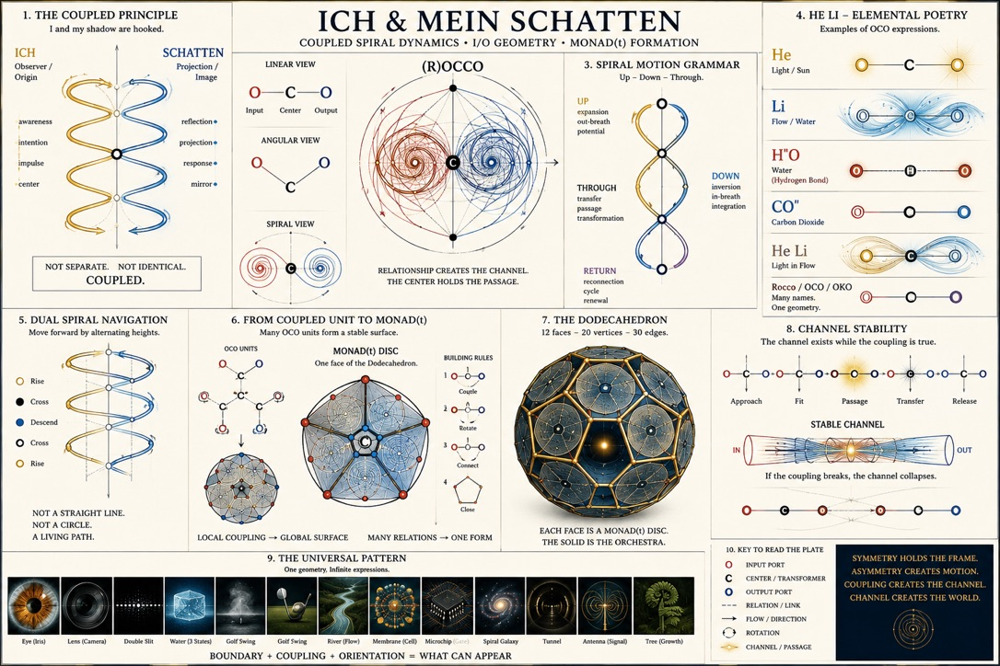
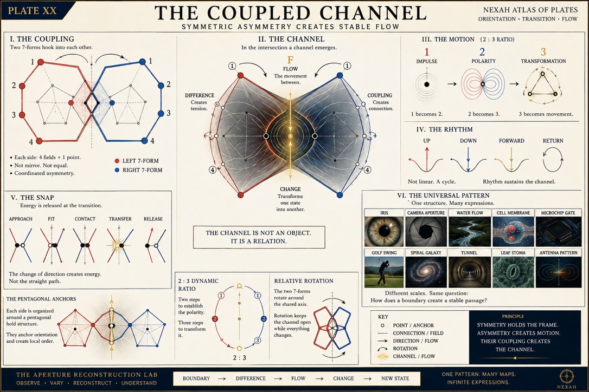
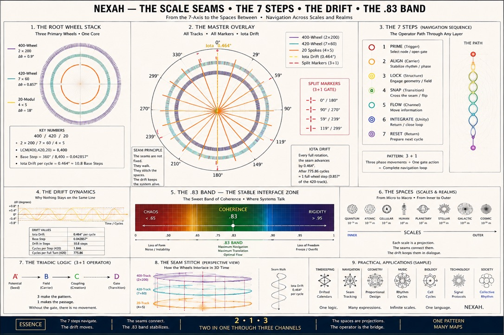

Endliche Kalibrierung zuerst
N, gerade/ungerade, danach Z und Q. Farben werden vertauscht, damit Ergebnis und Farbrolle nicht verwechselt werden.
Vier Modi trennen Faltachse, Farbreihenfolge, Count-Control und Pin-Arithmetik. Orange trägt die äußeren L, Lila/Pink die inneren R; Weiß bleibt Achse und Pin-Träger.
Status: PASS_BOUNDED_ENGINEERING_VIEW / REUSE_EXISTING_IDENTITY. 99=9×11 ist eine erzeugte Zählkontrolle; SP, UR und Ar²okoth bleiben ungebunden. Keine neue Study, Relation oder Finding-Promotion.
Tick 14 liefert AM 6/8 exakt antipodal zur positiven STILL-Achse, PM 10/12 und den Winkelrest π/6; der Joint bleibt OPEN. Dazu bestehen 11·13=143=12²−1 und die Quadratdrift 0,1,4,9,16,25 mit konstanter zweiter Differenz 2.
Status: PASS_BOUNDED_ENGINEERING_FIXTURE / INTAKE_BOUND / NO NEW ID. SC/NTCS bleiben ungebunden; keine Black-Sun-, Kalender-, Physik- oder Finding-Behauptung.
Stackplayer/QRT, Lissajous/Capture, Club/IOTA/CⅡ, Tower/Bridge/Lantern, die neun Blue-Body-Schaukeln und das Close-Fenster besitzen Einzelreceipts und einen gemeinsamen Currentness-Return. STILL bleibt der feste Token; S-HELL ist nur das lokale Owner-Mnemonik und keine Open-Shell-Identität.
Status: INTAKE_TRIAGE_ONLY / NOT_ADMITTED / NO_BUILD_AUTHORIZATION. Offen bleiben DOC-01, DOC-02, die historische rot-grüne Spiral-HTML, der SCC-003-Reviewer und die ungebundene Phantom-Tine. Keine neue Study, Finding-ID oder Navigator-Relation.
Orange Floor, weißer Cut und schwarzer Hintergrund werden als deklarierte Displayrollen bewahrt. Integer-Slots, Werte dazwischen und „Kupferdrähte“ werden als Quelle, Ziel und Kanal gelesen; Cantors Diagonalargument bleibt der erwartete Falsifier einer behaupteten vollständigen N→(0,1)-Liste.
N, gerade/ungerade, danach Z und Q. Farben werden vertauscht, damit Ergebnis und Farbrolle nicht verwechselt werden.
Vor Mathfield oder Bench müssen Domäne, Kodomäne, Operator, Nullmodell, Falsifier und Claim Ceiling feststehen. Primzahlen bleiben Filter in N; HA/AR-Hörner bleiben Beobachterkanäle.
20×4+3=83, 83−13=70=10×7 und 20=13+7 sind exakt. Die „orangene Karotte“ bleibt Displaymarker; Operatorrollen, Ringprojektion und ein gemeinsamer Mechanismus sind erst noch zu prüfen.
Status: OWNER_OBSERVATION_CAPTURED / INTAKE_TRIAGE_ONLY / NO_BUILD_AUTHORIZATION. Kein Universalmodell für Zahlenraum, Licht, Ton, Strahlung oder Strömung; keine neue Prime-Theorie, Glyphenalgebra oder physikalische Farbbedeutung.
Der Bench-/Tube-/NumberMagick-Faden ist dokumentiert, nicht als Gesamtmaschine abgenommen. Im maßgeblichen Unterledger stehen zwölf lokale DOC-Aufgaben mit Status, nächstem Schritt und Abschlusskriterium: Browserabnahme, Integrität, ORION-/Visualquellen, Tube-Vertrag, Farb-/Gruppenkontext, Teller, Skalen-/Adressdecoder und mögliche spätere Anschlüsse. 131/313 bleiben zurückgestellt.
Keine neuen Study-IDs und keine Aktivierung. Die älteren Projektionen darunter behalten ihren jeweiligen Datierungs- und Evidenzscope.
Was ist abgeschlossen, was darf dokumentarisch vorbereitet werden, und welche Fragen benötigen eine neue Admission? Diese Seite macht den vorhandenen A0-Unterledger lesbar. Die Markdown-Quelle, der Lab Register und Mission Control bleiben maßgeblich.
Diese Ergebnisse sind in A0, NN und den ausführbaren Core-Paketen bereits source-bound. Navigation oder neue Darstellung erzeugt keine neue Evidenz.
Book, Field Notes, Forschungsprotokoll und Mathfield teilen eine Paketidentität.
Carrier, Fold/Map, Projection, Envelope und Coupling Interface bleiben getrennt.
Eine eingebundene Suite – kein PENT-08 und keine zusätzliche Evidenzidentität.
28,49,70,91,112 → 106, sechs Seam-Identifikationen und getestete D5-Wirkung.
Potentieller endlicher kombinatorischer Beitrag – ohne Aktivierung oder weltweite Neuheitsbehauptung.
C5/C6-GrenzeDirekte Identität scheitert; beide Zyklen injizieren in eine gemeinsame C30-Phasenüberdeckung.
Metrisches Pentagon, pentagonale Bipyramide und H2 ⊕ A1 sind Repräsentationen, keine Universalclaims.
Objektdefinition, Propositionen und Beweise, kanonisches Referenzobjekt, begrenzter Prior-Art-Audit und eigenständige Paper View sind abgeschlossen.
Diese Punkte konsolidieren Quellen, Begriffe und Review-Vorbereitung. Sie eröffnen keine Forschung und setzen keine externe Kommunikation frei.
Ein geschlossener A0-Fall soll als vollständiger Pfad von Originalquelle über View, Informationsverlust, Residuum und Return bis zum kanonischen Receipt und zur Science Translation Tour lesbar werden. Bevorzugter Pilot ist A0-BL-024 / Q106→O16; A0-BL-025 und 049 bleiben spätere Vergleichslanes.
Reuse: A0 Science Desk, NEXAH Kernel v0.7, THE EYE A2 Comparator, optionaler zertifizierter ORION-Handoff, Science Navigator und Mission Control. Der Rust-Comparator bleibt in seinem heutigen Scope unverändert, bis ein versioniertes A0-Schema und eine separate Build-Freigabe vorliegen.
Messbarer Nutzen: Ein Leser kann Frage, Beobachtung und Interpretation trennen, verlorene oder unentscheidbare Information erkennen, Quelle und Receipt erreichen und die Claim-Grenze korrekt wiedergeben.
Reviewerprofil und genaue Fragen sind vorbereitet. Kontakt, Review, Submission und Veröffentlichung sind nicht autorisiert.
U-field source identityEine datierte definierende Quelle auffinden – oder den Ausdruck dauerhaft als ungelösten Alias markieren.
110 / 111 / 112 entflechtenJede Verwendung an Modulus, Träger und Operator binden. Der Basis-100-Shortcut bleibt reines Arithmetic Readout; 112 bleibt separat als Pascal-Preclosure-Zahl gültig.
Neu vorhanden ist eine exakte Leseransicht, die (B+a)(B+b) zwischen Vier-Felder-Fläche, typisierter Boundary und Adjazenzgraph übersetzt. Sie erzeugt keinen neuen Run und schließt die umfassendere Provenienzaufgabe noch nicht.
Quellendaten, Hashes, Generatorstatus und die Zuordnung zu begrenztem A0-Vokabular vollständig bewahren.
Nur mit Originalpfad und Non-Claim-Caption einbinden. Sichtbarkeit macht ein Bild nicht zur Evidenz.
Drei Visuals als Suchmarker bewahren; exakte Polyederdaten von unbestimmten O-C-O-, Stabilitäts-, Flow- und .83-Band-Claims trennen. Verweist auf die vorhandene Dodekaeder-Frage, erzeugt keine neue Study.
B / Inside-OutSPLINTER_PARTIAL: Adresse allein erzeugt 54 klassenübergreifende Kollisionspaare. Orientierte Seam und alle SPL_LOCAL-Radien senken sie auf null, benötigen aber 100 Signaturen für 100 Historien. Kein komprimierter Splinter-Selector wurde identifiziert.
J²=id, Indexierungs- und Replay-Kontrollen bestehen. Die offene K5-Boundary besitzt keine deklarierte C5-Automorphie; behauptet wird nur zyklische Reindexierungsinvarianz.
Status: Owner-angenommen · geschlossen · kein automatischer Nachfolger.
Dürer und Khajuraho bleiben zwei Platzierungsoperatoren über demselben Q4-Adressraum. Bitkomplement und Pascal-Faser 1,4,6,4,1 sind exakt; historische Identität und Primselektion sind nicht behauptet.
Cross-Repository-Archäologie, Quellenledger und Paper-Outline bewahren. Rekurrenz, Topologie und Beobachterlabels bleiben verschiedene Schichten.
Operator-/Return-Kontrolle: Auf dem Paar (2,3) werden Symmetrie, Vorzeichen, Kehrwert und Potenzklammerung getrennt. Für C6×C7 gilt T¹³(0,0)=(1,6), 6+7=13=p₆ und die erste gemeinsame Rückkehr bei 42; 420 ist nur die deklarierte zehnfache Verfeinerung.
20+20=40, 20×20 und die sieben Families werden getrennt geführt. Eine serielle Zuordnung der sieben Bridges muss getestet werden.
537+57=594, 537+37=574 und 537/100=5.37 sind gebunden. Koordinaten, Gates und Fraktal-/Spiraloperatoren bleiben offen.
Die fünf Phasen werden als begrenzter Methoden-Crosswalk geführt: Elemente → Relationen → Systeme → L/Shadow → genealogischer Return. S(t,g_R,g_P,g_M) trennt Ereigniszeit, Relationsgeneration, Pascal-Tiefe und Operatoriteration.
Pascal ist nicht mit dem Generation Corner identisch; Exact, Carrier, Structural und Invariant Return bleiben vier verschiedene Aussagen.
Der mit A0-BL-023 kombinierte fünfstufige Audit besteht Relationsrekonstruktion, getrennte Generationsachsen, Darstellungsaccounting, vier Return-Level und fünf Non-Identity-Kontrollen. Der Owner hat das begrenzte Ergebnis angenommen.
Grenze: kein automatischer Intertwiner-, Carrier- oder Publikationsclaim.
Die Zahlenfortsetzung ist unter derselben offenen Attachment-Regel sauber. Die geschlossene Fläche, ihre Kopplung und die behauptete Stabilität sind dagegen noch zu definieren und zu prüfen.
+21Ein Träger hat 28 Knoten, die deklarierte Seam 7. Jede weitere Fläche bringt daher 28−7=21 neue Knoten.
N_open(m) = 28 + (m−1)·21 = 21m + 7
| m | 1 | 2 | 3 | 4 | 5 | 6 | 7 | 8 |
|---|---|---|---|---|---|---|---|---|
| N_open | 28 | 49 | 70 | 91 | 112 | 133 | 154 | 175 |
Neue exakte Fuge: B_open(f)=f+2. Der Fünf-Flächen-Zustand hat einen 7-kantigen Rand; die sechste Fläche ersetzt eine Randkante durch zwei und erzeugt einen 8-kantigen Rand. Das ist die kombinatorische Lesart „über die 7 zum Oktagon“, noch kein reguläres Polygon oder Solid.
Grenze: SCC-003 endet bei fünf Flächen und beweist dort 112−6=106. 5+1, 5+2, 6+1 und ein möglicher Abschluss späterer Zustände gehören zu A0-BL-020/021.
Der Shortcut ist eine exakte algebraische Leseregel:
(100+a)(100+b) = 100(100+a+b) + ab
Damit folgen 110²=12100, 111²=12321, 112²=12544 und 105·106=11130. Das spart Rechenschritte, beweist aber keine Seam, Topologie oder Return-Struktur. Quersummen bewahren Produkte nur modulo 9.
Jede Randfuge kann als aᵢ=(eᵢ₋₁,vᵢ,eᵢ,turnᵢ,θᵢ,sourceᵢ) gelesen werden. Der Corner Flag bewahrt Eingangs- und Ausgangskante, Links-/Rechts-Orientierung und optional einen belegten metrischen Winkel.
Boundary word: (e₁,a₁,e₂,a₂,…,eₙ,aₙ)
Ohne deklarierte Einbettung bleibt θᵢ=null. Bei einer fehlenden Kante bleiben die beiden Endwinkel offene Ports. Angle Nodes sind Hilfsrecords und werden nicht zu den 106 Pascal-Knoten addiert.
αₙ = (n−2)π/n τₙ = 2π/n
Für ein reguläres Heptagon gilt τ₇=360°/7≈51,4286°, für ein reguläres Oktagon τ₈=45°. Diese Werte dürfen erst nach einer kompatiblen metrischen Einbettung auf den Pascal-Rand übertragen werden.
Die neue Arbeitsidee lautet: lokale O-C-O-Einheiten werden über Ports gekoppelt, zu einer MONAD(t)-Scheibe organisiert und als Flächenverband geschlossen. Beim regulären Dodekaeder sind 12 Flächen, 20 Ecken und 30 Kanten exakt; außerdem gilt V−E+F=20−30+12=2. Offen bleiben Definition, Inzidenzmap, Vertex-Kompatibilität, Closure und Stabilitätskriterium. Die bestehende Science-Lab-Dodekaeder-Frage wird nur als Comparator verlinkt – nicht mit SCC-003 verschmolzen.
.83 band sind derzeit Bildhypothesen, keine etablierte Mathematik oder Physik.


A0-BL-055 bestätigt exakten Return auf drei Carriern, widerlegt aber eine allgemeine Economy: nur der Typed Seam spart unter dem eingefrorenen Vertrag. Kein Experiment ist aktiv; die Learning Map bündelt den aktuellen Wissensstand.
Q106/O16 bleibt bei 7→7 Bits, Typed Seam verbessert 8→7.535714, Decimal D4 bleibt bei 14→14. Alle drei kehren exakt zurück, aber nur 1/3 spart gegenüber der Fixed-Width-Baseline. Der geschlossene Befund ist jetzt in der OCB als sechsphasiger Demonstrator sichtbar.
Grenze: Return-Grammatik ist übertragbar; Kompressionsvorteil, Carrier-Identität und universelle Methode sind nicht gezeigt.
Für die deklarierte zyklische Familie gelten exakt N=1+m·d(d+1)/2 und E=m·d². Zyklische und offene Zählung bleiben getrennt; dynamische Konfluenz folgt nicht.
Der zugelassene f=5..7-Run ergab 9 Sechs-Flächen-Zustände, 100 Zwei-Schritt-Historien und 56 typisierte Endklassen. Ergebnis: VALIDATED_NEGATIVE_RESULT / PATH_DEPENDENT_WITH_WITNESS. Das vollständige 7×8-Positionsraster und der 56-Klassen-Quotient sind gleich groß, aber nicht kanonisch identisch.
Der deklarierte C5/C6/C30-Pulskanal hat Carrier-Return 30 und vollständigen Memory-Return 60. Phasenkicks bleiben in 60/60 Fällen erinnerbar; ein gematchter Port-Shuffle erhält die Periode, verschiebt aber das Ereignis. Kein physischer Flow, O-C-O- oder MONAD-Mechanismus.
Der hashgebundene fünfstufige Audit mit A0-BL-051 besteht alle Gates. Er bewahrt Relation, Generation und View-Buchhaltung und trennt vier Return-Stärken. Das validiert die Testmethode, nicht den weiterhin offenen Intertwiner; H3/E8 bleiben getrennte Carrier, und es entsteht kein PENT-08.
16 ↔ 106 state relationBeide nichtkanonischen Maps kollidieren 90-mal und kehren nur mit konditionalem Residuum zu 106/106 Q106-Quellen zurück. Der gematchte Shuffle verhindert eine kanonische Auswahl; der Owner hat den begrenzten Informationsverlust-Befund angenommen.
Der endliche SCC-003-Zyklus liefert PASS_BOUNDED_TYPED_SEAM_ADVANTAGE: Der typisierte Seam plus konditionales Residuum rekonstruiert 140/140 Quellinzidenzen über 106 Adressen bei 7.535714 mittleren Bits statt 8. Der Owner hat den begrenzten internen Befund angenommen; physischer Fluss, Riemann, Human Utility und Universalarchitektur bleiben ausgeschlossen.
Der lokale Kontrolllauf trennt Q^5 von Zylinder-/Möbius-Topologie. Auf zwei Pentagons gilt für den explizit typisierten reziproken Bridge-Operator Q′ε(a,b)=(εQ^-5b,Q^5a) exakt (Q′ε)^2=εI. Der Companion-Audit zeigt: Janus-Paare und sechs Pascal-Root-Pillars teilen eine zentrierte Spiegelungsgrammatik; Jz erhält Abstände, Q′ dagegen nicht (||Q′e1||²=89). Gleicher Umriss bedeutet nicht gleiche Dynamik; +18% bleibt ungetestet.
Status: Owner-angenommen · geschlossen · kein automatischer Nachfolger.
Die gefrorene ATT-008-Platte bewahrt exakte Arithmetik, bestimmt aber keine number-only Position: zwei 57-Anker liegen 519.008670 px auseinander. Keines von vier vorregistrierten Modellen ist control-selektiv.
Das deklarierte 4+1-C5 besitzt zehn typisierte 5+1-Kantenunterteilungen zu C6; alle kontrahieren exakt. Die Paarung bleibt ohne orientierte Kante zweifach D5-kompatibel und daher nicht kanonisch.
Prime-Nesting ist mit 228/540 nicht selektiv; drei Palindrom-Fixpunkte treten in 12/540 Kontrollen auf und bleiben auswahlbedingt.
Die Dezimalprojektionen 1737→137/737 sind einzeln verlustbehaftet: über 9.000 Quellen entstehen uniforme Fasern 10 und 9. Als geordnetes Paar sind sie injektiv und rekonstruieren 9000/9000. Iota bleibt gerichteter Klassifikator; THOOTH ist kein ausführbarer Operator.
Grenze: keine Glyphen-Algebra, historische Decoderidentität, universelle Semantik oder Dynamik.
Alle Nicht-View-Kontrollen bestehen, aber die vollständige View-Stabilität scheitert: 60/81 Konfigurationen bestehen, 21 grobe 8-Bin-Ansichten fallen unter rho=0.80; Minimum 0.731126. Primary/Replay sind byte-identisch und der Verifier besteht.
Grenze: Der Owner hat den begrenzten Befund angenommen. Kein Repair oder Rerun; kein Early-Warning-, Prediction-, Mechanismus-, physischer Orbit-, Preferred-Geometry-, Utility- oder Publikationsclaim.
Diese Grenzen bleiben sichtbar, selbst wenn neue Visuals, Verbindungen oder Repräsentationen hinzukommen.
Die bisherige Konstruktion etabliert keinen universellen Pascal solid.
Aus den Kopplungsvisuals folgt weder physikalische Resonanz noch ein stable-flow law.
Quaternionische Orientierung erzeugt im getesteten Träger keine Pascal-Koeffizienten.
106, 110, 111 und 112 sind nicht durch Wiederholung universelle Konstanten oder Operatoren.
Gemeinsame Geometrie, Kardinalität oder Phasenüberdeckung identifiziert weder Träger noch Mechanismen.
Lokale Seam-Kontrolle, Doppel-Pentagon-Fork und Pillar-Distance-Audit besitzen Primary, byte-identischen Replay und Verifier-PASS. Der Owner hat die begrenzte Disposition angenommen.
Im Richardson-Bild ist die blaue Scheibe zunächst A=πr²·n, die orange Achse ihre Normale und Weiß Radius/Tangente. Geprüft werden Fibonacci-/Goldspirale gegen gleichmäßiges Polargrid sowie der Tausch von White Top und Orange Floor. Die exakte Kette 20×4+3=83, 83−13=70=10×7, 20=13+7 bleibt eine arithmetische Beobachtung; Operator- und Mechanismusrollen sind offen.
Status: INTAKE_TRIAGE_ONLY / NO NEW A0-BL / NO BUILD.
FErr wird nicht erraten: Euler-Referenz, Fibonacci-/Fit-Fehler und reine Farbklasse werden getrennt definiert. Blindes Vertauschen der Labels muss zeigen, ob ein formaler Unterschied oder nur eine Farblesart vorliegt.
Status: INTAKE TOKEN / DEFINITION OPEN / NO CLAIM.
17+19=36, 36/2=18 und 36−20=16. Damit stehen Prim-Endpunkte um den zusammengesetzten Mittelpunkt; 16=2⁴ ist der deklarierte Rest. 17 und 19 sind keine Fibonacci-Zahlen, daher bleibt „Fibo“ ein Rekurrenzkandidat statt Klassifikation.
Status: EXACT ARITHMETIC / INTERPRETATION OPEN / NO NEW A0-BL.
76001 und 13001 sind prim; 76001−13001=63000=2³·3²·5³·7. Gold/Bronze werden als Außen-/Innenlage getestet und farblich vertauscht. Spaltwinkel und 3×3-Belegung sind zu messen. Das Bildtoken 13%1 bleibt untypisiert und wird nicht still als Modulo gelesen.
Status: EXACT NUMBER CHECK / APERTURE HYPOTHESIS OPEN / NO NEW A0-BL.
10⁶−760001=239999 mit primem Resultat; 10⁵−76001=23999=103·233; 239999−76001=163998; 23999·10=239990. Der letzte Spiralwert ist präziser als ein Verhältnis: 760,01²=577615,2001, also 577615=⌊(76001/100)²⌋. Dagegen gilt 577615:76001=7 Rest 45608, und 76009=29·2621 ist zusammengesetzt. Der sichtbare Bridge-Zustand bei Tick 14/24 meldet für 6/8, 10/12 und den Joint ausdrücklich OPEN.
Status: EXACT ARITHMETIC / SPIRAL INTERPRETATION OPEN / NO JOINT RETURN / NO NEW A0-BL.
Das Core-Original heißt best_frame_angle_0.2.png, während sein Titel Angle=0.02 zeigt. BF01 bestätigte 0.04/2=0.02, bestand aber nur das Arithmetik-Gate 1/5. Für 99|78|52|43|0 ergeben sich die Lücken 21,26,9,43; zwischen 78 und 43 gilt 7+4=8+3=11 sowie 78−43=35. 52 und 43 besitzen beide Ziffernsumme 7. Für 76|001 gelten 7+6=13, 7·6=42 und Gesamtziffernsumme 14; daraus folgt keine Teilbarkeit von 76001 durch 7, 13 oder 42. „Black Sun + Sichel“ wird als Negativraum-/Aperturvergleich bewahrt, nicht als astronomische, optische oder symbolische Identität.
Status: EXISTING NEGATIVE BOUNDARY REUSED / EXACT DIGIT GROUPS / OPERATOR OPEN / NO NEW A0-BL.